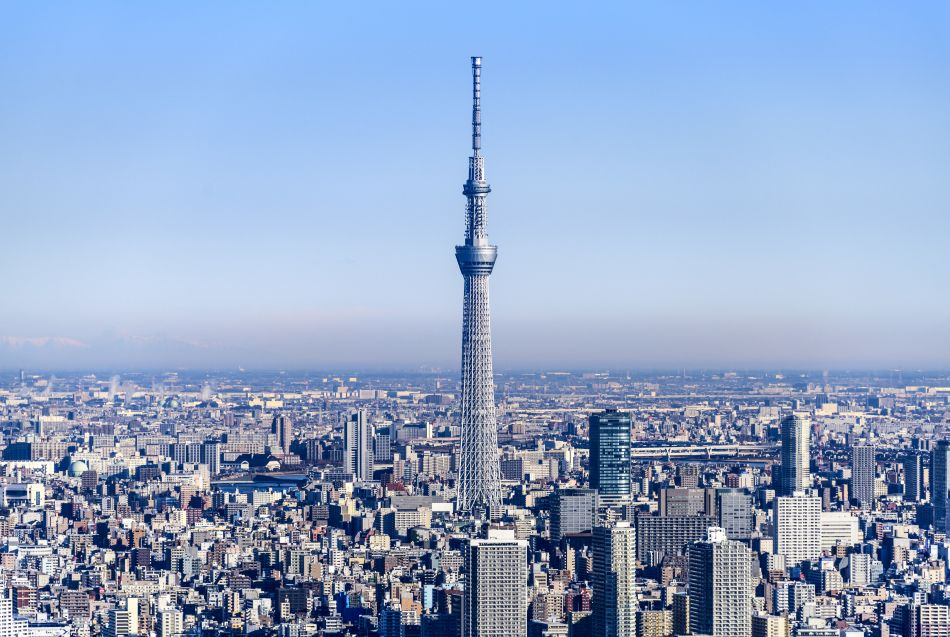
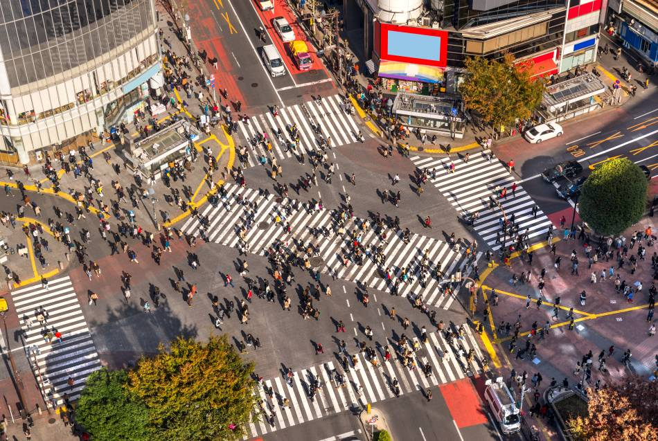

Tokyo is located on Tokyo Bay in the Kanto region of Honshu, Japan’s largest island. The closest airport is Haneda officially known as Tokyo International Airport. Tokyo is known for its fashion and shopping, from the trendy shopping districts of Harajuku and Shibuya, to the luxury flagships of Ginza.
Shinjuku is the thriving business district; a mix of gleaming skyscrapers and atmospheric back streets with tiny bars. Asakusa is the heart of Tokyo’s downtown, with ancient temples and traditional stores. Tokyo is a foodie paradise with more Michelin-starred restaurants than any other city in the world, along with hundreds of cheap and delicious ramen shops. (Source: Tokyo Official Tourism Site)
Prefecture Image
Tokyo Skytree
Korankei Gorge
Shibuya
